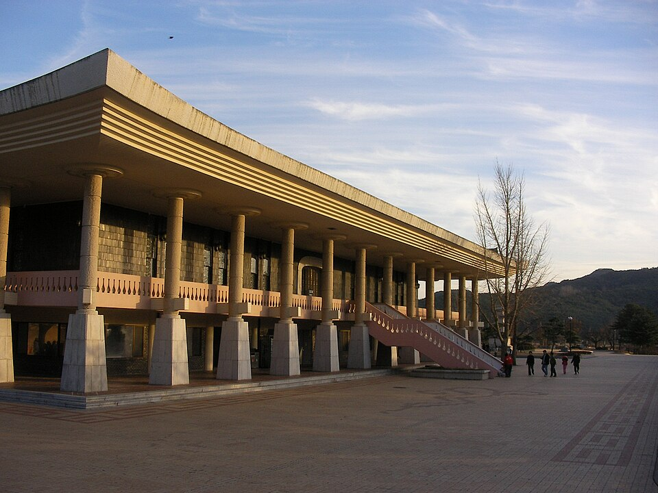
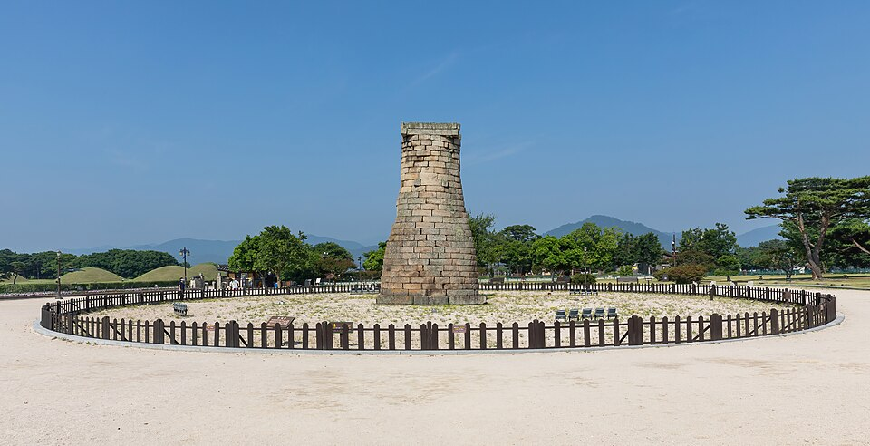
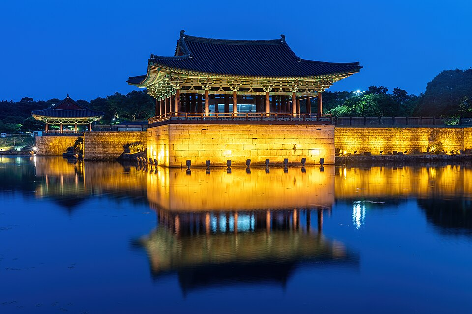
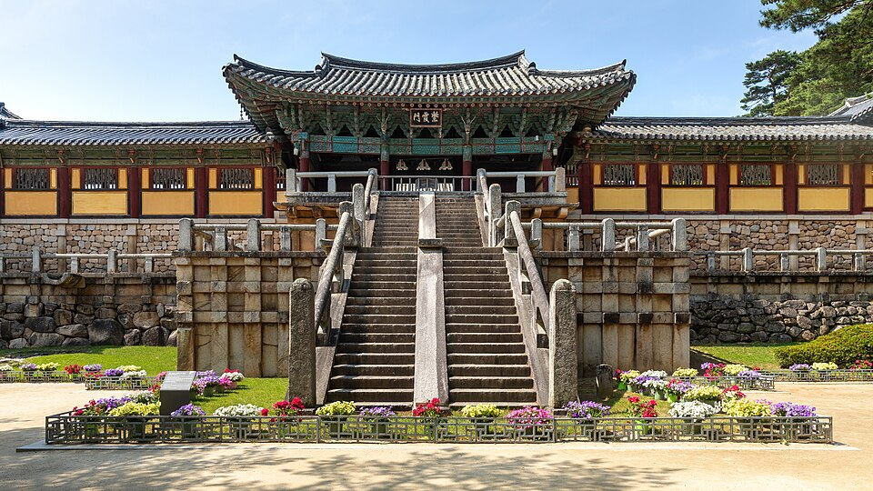
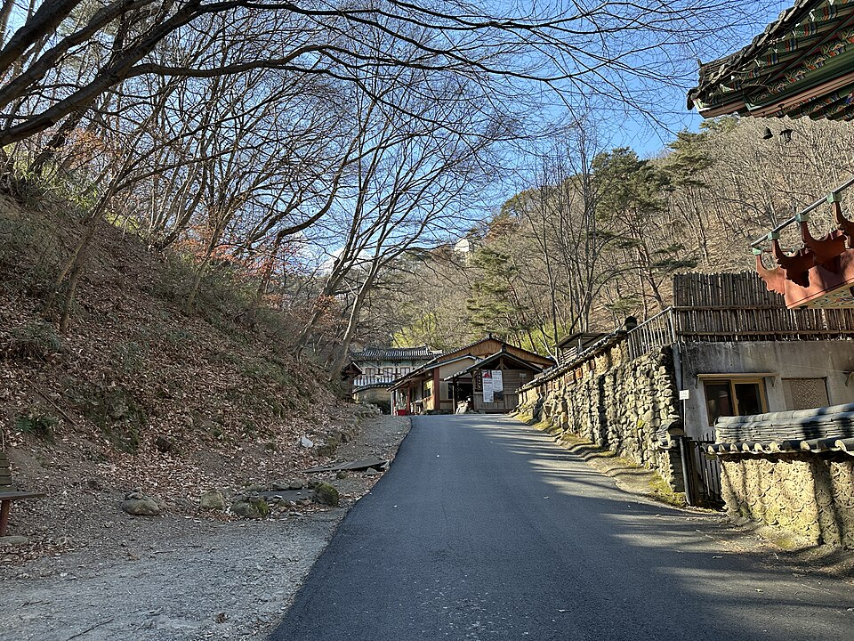
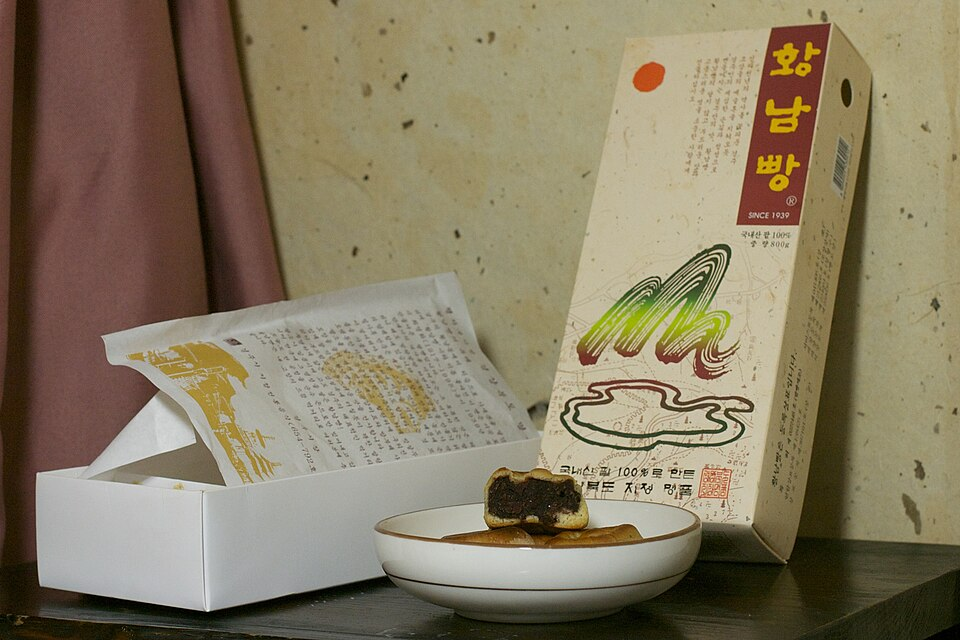
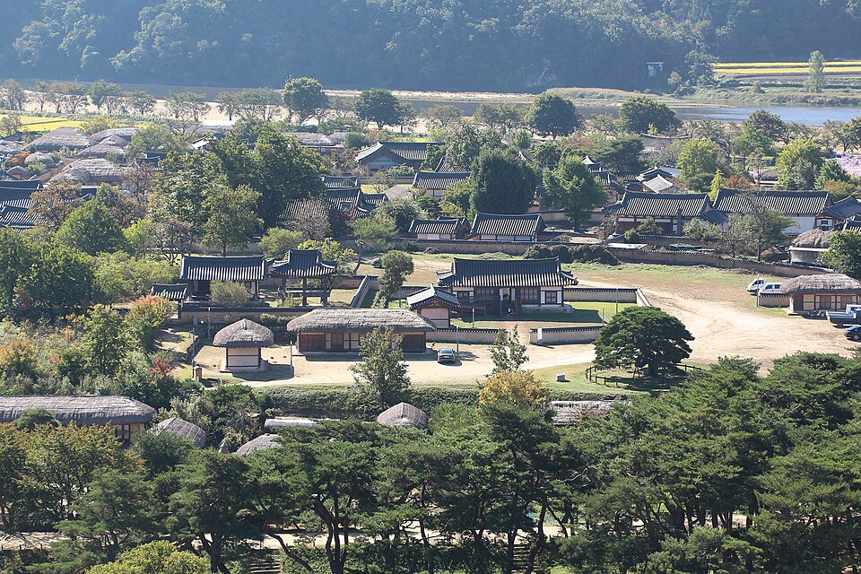

Gyeongbuk qua màn ảnh: Di sản Silla, làng Hahoe và các món hầm ở chợ
Hướng dẫn các địa điểm ở Gyeongbuk từng xuất hiện trong video, từ Gyeongju thời Silla, làng Hahoe ở Andong đến các quán ăn chợ ở Gyeongsan, Gumi và Pohang.
Giới thiệu về Gyeongbuk
Gyeongbuk (tỉnh Gyeongsang Bắc) là nơi có Gyeongju, kinh đô của vương quốc Silla trong khoảng một nghìn năm, và làng Hahoe ở Andong, một ngôi làng truyền thống vẫn còn người sinh sống. Các món ăn địa phương nổi bật gồm Andong jjimdak (gà hầm), các quán ăn trên phố Hwangnidan-gil ở Gyeongju và mulhoe Pohang (canh cá sống lạnh). Dưới đây là những địa điểm từng xuất hiện trong video, được sắp xếp theo khu vực.
Gyeongju: Lần theo dấu vết vương quốc Silla
Bảo tàng Quốc gia Gyeongju

📍 Bảo tàng Quốc gia Gyeongju · Naver Map · Google Maps
Nơi để chiêm ngưỡng những chiếc vương miện vàng nổi tiếng của Silla. Bảo tàng xuất hiện trong một tập tổng hợp của chương trình du lịch Hàn Quốc Welcome, First Time in Korea?, với tập Gyeongju đi "từ vương miện vàng trong bảo tàng đến đêm trăng Silla". Đây là điểm dừng đầu tiên phù hợp để làm quen với văn hóa Silla.
Đài thiên văn Cheomseongdae

📍 Đài thiên văn Cheomseongdae · Naver Map · Google Maps
Đài quan sát thiên văn từ thời Silla, đặc biệt được yêu thích vì cảnh đêm, thường được gọi là "đêm trăng Silla". Xem trước tập Gyeongju nói trên là một cách hay để cảm nhận không khí nơi đây.
Cung Donggung và hồ Wolji

📍 Cung Donggung và hồ Wolji · Naver Map · Google Maps
Một trong những điểm ngắm cảnh đêm nổi tiếng nhất Gyeongju. Phần lớn du khách đến sau khi mặt trời lặn để ngắm các công trình cung điện và mặt hồ dưới ánh đèn.
Chùa Bulguksa

📍 Chùa Bulguksa · Naver Map · Google Maps
Ngôi chùa nổi tiếng với hai ngôi tháp đá Seokgatap và Dabotap. Rất hợp để đưa vào lịch trình một ngày khám phá di sản Silla ở Gyeongju.
Chùa Golgulsa

📍 Chùa Golgulsa · Naver Map · Google Maps
Ngôi chùa nổi tiếng với Sunmudo, một môn võ thuật Phật giáo, và chương trình templestay (lưu trú tại chùa). Video Temple Stay & Sunmudo Demonstration at Golgulsa Temple giới thiệu cả trải nghiệm lưu trú lẫn màn biểu diễn Sunmudo.
Bánh Hwangnam

📍 Bánh Hwangnam · Naver Map · Google Maps
Tiệm bánh ở Gyeongju bán bánh Hwangnam, loại bánh nhân đậu đỏ đặc trưng của thành phố. Tiện để ăn vặt khi di chuyển hoặc mua làm quà.
Andong: Làng dân gian được UNESCO công nhận
Làng Hahoe Andong

📍 Làng Hahoe Andong · Naver Map · Google Maps
Ngôi làng truyền thống được UNESCO công nhận là Di sản Thế giới. Video Andong & Hahoe Village – UNESCO, Hanok Stay & Market giới thiệu trải nghiệm ở nhà hanok và khu chợ địa phương, còn Andong Hahoe Village – Where K-Dramas Get Their Soul giới thiệu nơi đây như một ngôi làng mang đậm không khí phim truyền hình Hàn Quốc. Khi ở Andong, bạn có thể thử món đặc trưng của thành phố là Andong jjimdak.
Hương vị chợ: Gyeongsan, Gumi và Pohang
Jinryang Dwaeji Jjigae (Gyeongsan)
📍 Jinryang Dwaeji Jjigae · Naver Map · Google Maps
Quán canh hầm thịt heo. Quán xuất hiện trong EP.05 (Gyeongsan) của loạt chương trình về chợ của Paik Jong-won Nima, Geu Sijang-eul Gao, được giới thiệu là quán mà chỉ chủ quán mới được cầm muôi.
Dosan Sigyuk Sikdang (Gumi)
📍 Dosan Sigyuk Sikdang · Naver Map · Google Maps
Nổi tiếng với món canh hầm thịt heo cho rất nhiều tỏi. Quán xuất hiện trong EP.29 (Gumi) của cùng loạt chương trình, với tiêu đề "canh hầm thịt heo nửa thịt nửa tỏi".
Uhyeon Haemuljjim (Pohang)
📍 Uhyeon Haemuljjim · Naver Map · Google Maps
Quán chuyên món cá chày hầm (agujjim). Quán xuất hiện trong EP.43 (Pohang) của loạt chương trình về chợ của Paik Jong-won. Nếu đến Pohang, bạn có thể kết hợp với món nổi tiếng khác của thành phố là mulhoe cho một chuyến đi thiên về hải sản.
Gợi ý lộ trình
Hãy dành ít nhất một ngày trọn vẹn cho Gyeongju. Ban ngày, ghé những nơi cần nhiều thời gian như Bảo tàng Quốc gia Gyeongju, chùa Bulguksa và chùa Golgulsa, sau đó đến Cheomseongdae và cung Donggung, hồ Wolji khi trời tối để ngắm cảnh đêm. Mua bánh Hwangnam ăn vặt trên đường đi. Nếu định tham gia templestay ở Golgulsa, hãy dành riêng một đêm. Pohang nằm cùng phía bờ biển phía đông với Gyeongju nên dễ kết hợp, còn làng Hahoe ở Andong sẽ thong thả hơn nếu đi riêng trong một ngày hoặc kết hợp với lưu trú ở nhà hanok. Các quán canh hầm thịt heo ở Gyeongsan và Gumi phù hợp nhất để dừng chân ăn uống khi đi qua những thành phố này.
Quán ăn & địa điểm trong video
- Bảo tàng Quốc gia Gyeongju (국립경주박물관) Vương miện vàng Silla Naver Map Google Maps
- Làng Hahoe Andong (안동 하회마을) Làng dân gian được UNESCO công nhận Naver Map Google Maps
- Chùa Golgulsa (골굴사) Sunmudo & templestay Naver Map Google Maps
- Jinryang Dwaeji Jjigae (Gyeongsan) (진량돼지찌개 (경산)) Canh hầm thịt heo Naver Map Google Maps
- Dosan Sigyuk Sikdang (Gumi) (도산식육식당 (구미)) Canh hầm thịt heo nhiều tỏi Naver Map Google Maps
- Uhyeon Haemuljjim (Pohang) (우현해물찜 (포항)) Cá chày hầm Naver Map Google Maps
- Chùa Bulguksa (불국사) Tháp đá Seokgatap và Dabotap Naver Map Google Maps
- Đài thiên văn Cheomseongdae (첨성대) Cảnh đêm Silla Naver Map Google Maps
- Cung Donggung và hồ Wolji (동궁과 월지) Điểm ngắm cảnh đêm Naver Map Google Maps
- Bánh Hwangnam (tiệm bánh ở Gyeongju) (황남빵) Bánh nhân đậu đỏ Hwangnam Naver Map Google Maps
Vị trí và giờ mở cửa có thể thay đổi, hãy kiểm tra bản đồ trước khi đi.
Video liên quan


Bài viết khác
- Các địa điểm Seoul lên sóng truyền hình: Lotte World Tower cao 541m và Bảo tàng Chiến tranh Hàn Quốc
- Jeonnam trên màn ảnh: Cáp treo vượt biển Yeosu và đảo Odongdo
- Hướng dẫn ẩm thực Jeollanam-do: cua đá Yeosu, hải sản Mokpo và bàn ăn Gwangju qua các chương trình ẩm thực Hàn Quốc
- Hướng dẫn ăn vặt và chợ ở Seoul: nên ăn gì ở chợ Gwangjang, chợ hải sản Noryangjin và hơn thế nữa (theo video ẩm thực)
- Hướng dẫn làm đẹp Seoul: Mua sắm Olive Young ở Myeongdong và Seongsu, phòng khám da liễu và liệu pháp làm đẹp
- Hướng dẫn ẩm thực Hàn Quốc theo vùng: Nên ăn gì ở Seoul, Busan, Jeju, Mokpo, Daegu, Jeonju và nhiều nơi khác (Tổng hợp từ video mukbang và ẩm thực nổi tiếng trên YouTube)